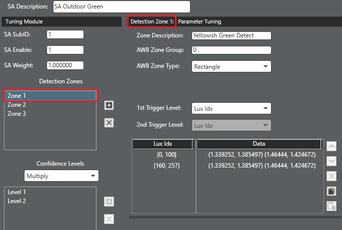
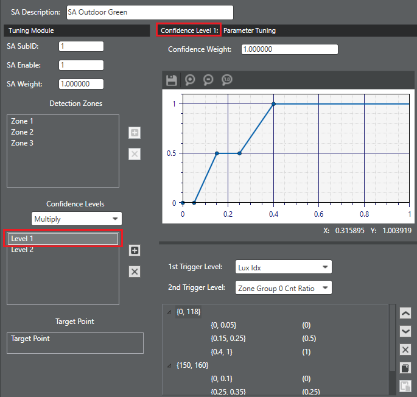
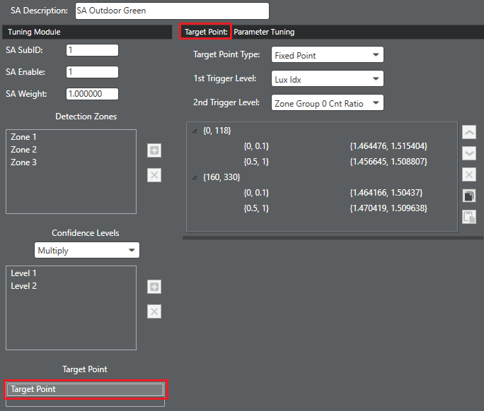

Prerequisite: Before performing any fine-tuning, be sure
to run the AWB initial tuning procedure to generate initial parameter values and
predefined scene analyzers.
Use this procedure to create a new scene analyzer or to customize any of the
predefined scene analyzers.
Add a generalized scene analyzer
- Before adding a new SA, review the predefined SAs to determine if one can be
tuned to improve your test scene. It is recommended not to add too many SAs.
- If an available SA is not helpful for your test scene, clearly design the
concept of the SA you want to add. Refer to the predefined SAs for
examples.
- Click the AWB tab and
click the List View tab.
- Select any option in the Scene
Analyzer section, then click the green plus sign to add a new
SA. An "unnamed" instance of an SA appears in the Scene Analyzer section. The
instance is initialized with the following data structure:
| Module |
Trigger level |
Trigger control type |
Trigger zone |
Notes |
| Detection zone |
1 level trigger |
Lux index |
1 trigger zone |
Group ID: 0, Zone type: rectangle |
| Confidence level |
2 level trigger |
Lux index for both levels |
1 trigger zone for each level |
Confidence comute type: multiply,
Confidence weight: 1.0 |
| Target point |
2 level trigger |
Lux index for both levels |
1 trigger zone for each level |
Target point type: Fixed target
point |
- Add a descriptive name for the SA in the SA
Description field. This name replaces "unnamed" in the SA
selection list.
- Enter a unique identification number in the SA SubID field.
- If needed, modify the SA
Enable flag to enable (1) or disable (0) the SA.
- If needed, modify the SA
Weight field.
Note: This value is used to weight this SA when
the Decision Aggregator computes a weighted average among all SA decision
points.
- Tune the default structure for the detection zones, confidence
level, and target point to match the planned design of the SA. Refer to the
sections Tune or add detection zones, Tune or add confidence
levels, and Tune target point.
Tune or add detection zones
- Open the project and click the AWB tab.
- In the Scene Analyzer
section, select the SA you want to modify.
- In the Detection Zones
section, select the zone you want to modify or click the green plus sign to add
a new detection zone.

- Enter a descriptive name for the zone in the Zone Description field.
- Determine which group is applicable to this detection zone and
enter the number in the AWB Zone Group
field.
- Select the appropriate zone type (rectangle, triangle, or CCT)
from the AWB Zone Type list.
- Leave the 1st Trigger
Level as Lux Idx. That is the only trigger available for
detection zones.
- Adjust, add, or delete lux index ranges in the first column to
set the preferred lux level triggers.
- Adjust or add entries to the second column to set the core data.
The core data for detection zones represent the rectangle/triangle vertices or
CCT range that defines the detection area enabled by the associated lux index
trigger.
- Rectangle – Set first two entries [(top-left vertex), (bottom-right
vertex), (0,0)]
- Triangle – Set all three entries to three vertices of the triangle.
- CCT – Set the first entry to the CCT range [(lowCCT, highCCT), (0,0) ,
(0,0)]
Tune or add confidence levels
- Open the project and click the AWB tab.
- In the Scene Analyzer
section, select the SA you want to modify.

- In the Confidence Levels section,
select the computation type for this SA from the list.
- In the Confidence
Levels section, select the confidence level you want to modify
or click the green plus sign to add a new confidence level.
- If needed, update the Confidence
Weight field.
Note: This is the weight to apply to the specified
confidence level. Only used if the Confidence Compute Type is Weighted
Average.
- Set the 1st Trigger Level
to the preferred trigger type.
- Set the2nd Trigger Level
to the preferred trigger type. If a second level trigger is not needed, set this
to match the value of the 1st Trigger
Level.
- Adjust, add, or delete trigger ranges in the first two columns
to set the preferred triggers.
- In the last column, adjust or add entries to set the core data.
The core data for confidence levels represent the confidence level to assign
based on the trigger configuration.
Tune target point adjustment
Note: For accurate and easy tuning, first
tune the decision point adjustment for the scene that has 1.0 confidence level,
after disabling all other SAs.
- Open the project and click the AWB tab.
- In the Scene Analyzer
section, select the SA you want to modify.
- In the Target Point
section, select Target Point. 
- Select the appropriate adjustment (fixed point or gain
adjustment) from the Target Point Type
list.
- Set the 1st Trigger Level
to the preferred trigger type.
- Set the 2nd Trigger Level to the
preferred trigger type.
- Adjust, add, or delete trigger ranges in the first two columns
to set the preferred triggers.
- In the last column, adjust or add entries to set the core data.
The core data for target point adjustment are the coordinates of the fixed
decision point or the Rg/Bg gain values assigned to an image that meets the
trigger criteria.